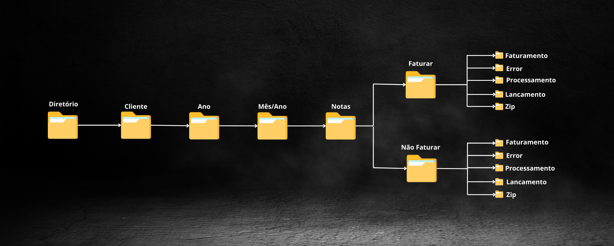

No desenvolvimento de processos que lidam com grandes volumes de dados, é comum no uso das boas práticas estruturas de diretórios organizados em pastas e subpastas para armazenar os arquivos a serem processados. Isso requer um gerenciamento eficaz dessas pastas para evitar falhas no bot, que poderiam ocorrer caso um diretório esperado não existisse. Em certas épocas do ano, torna-se necessário implementar regras de tratamento específicas para evitar a criação de pastas redundantes, desnecessárias ou até mesmo a falta de uma pasta gerada por exclusão.
Esse processo foi desenvolvido no Automation Anywhere com a função de gerenciamento de diretórios, garantindo que a criação e organização de pastas e subpastas ocorra conforme as condições definidas e atendendo às demandas do fluxo de dados. Nas criações dos processos de notas fiscais foi identificado a necessidade de um robô que gerenciasse as pastas pois sabendo que tinha a interação humana ficaria sujeito a exclusão de pastas e movimentação.
Configurei o robô para que, a cada execução, ele verificasse automaticamente se a pasta correspondente ao mês seguinte já estava criada. Essa verificação é essencial, pois havia notas fiscais que só seriam processadas no próximo mês. No caso de o robô identificar o mês de dezembro, ele ajusta o ano para criar a pasta de janeiro do ano seguinte, garantindo a continuidade do processo e a organização antecipada dos dados nos diretórios corretos.
Este gerenciamento programático de diretórios ajuda a reduzir erros operacionais e a manter o desempenho e a integridade dos processos automatizados, particularmente em fluxos de dados sensíveis à organização de arquivos e pastas.